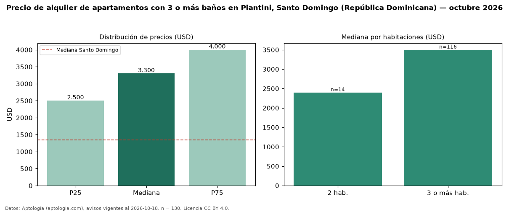

Precio de alquiler de apartamentos con 3 o más baños en Piantini, Santo Domingo (República Dominicana) — octubre 2026
Con 130 avisos vigentes, el canon mediano de apartamentos con 3 o más baños en alquiler en Piantini, Santo Domingo (República Dominicana) es USD 3.300 al mes. Frente a la mediana de todos los apartamentos en alquiler de Piantini (USD 1.600, n = 583), queda 106 % por encima; este segmento reúne el 22 % de esos avisos. Por metro cuadrado, la mediana es USD 13,31/m² al mes (n = 117), 15 % por debajo del conjunto de referencia (USD 15,71/m²). El área mediana anunciada es 226 m². El segmento con más oferta es el de 3 o más habitaciones (116 avisos, mediana USD 3.500); pasar de 2 habitaciones a 3 o más habitaciones cambia la mediana +46 %. La mediana de todos los apartamentos en alquiler de Santo Domingo es USD 1.350 (+144 % de diferencia). La mitad central de los avisos va de USD 2.500 a USD 4.000 (razón 1,6), una dispersión moderada. Datos: Aptología (aptologia.com), CC BY 4.0 — https://www.aptologia.com/do/alquiler/santo-domingo/piantini. Archivos: PDF, CSV con las cifras y gráfica PNG.

| Avisos únicos | 130 |
|---|---|
| Percentil 25 | COP 2.500 |
| Mediana | COP 3.300 |
| Percentil 75 | COP 4.000 |
| Mediana por m² | COP 13 |
Fuente: avisos vigentes de portales inmobiliarios recopilados por Aptología, deduplicados (mínimo 30 avisos únicos por celda). Precios pedidos, no cerrados. Fecha: 2026-10-18.